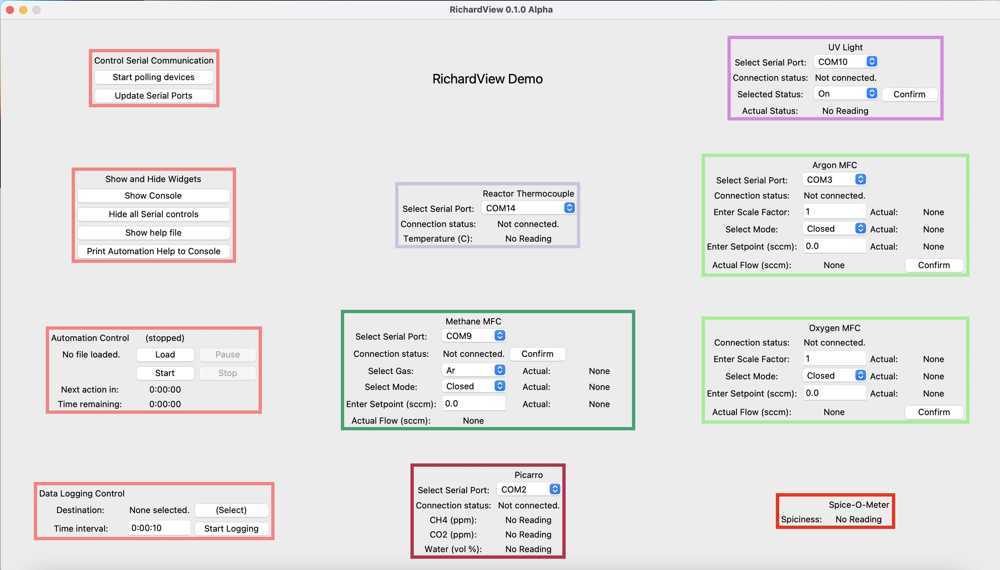
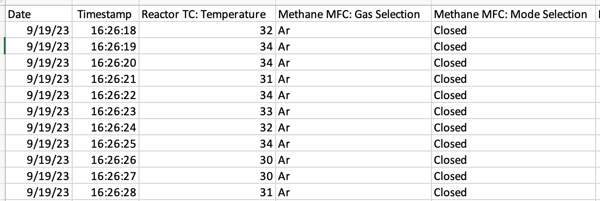

Tutorial: Using an Existing Dashboard
This tutorial talks about how PyOpticon dashboards are laid out and how one uses their basic functions. Most folks will want to start with the built-in ‘demo dashboard,’ which the next section tells you how to open. If someone else has already built a dashboard that connects to real instruments in your facility, you can also learn on that. You can mostly operate a dashboard without knowing Python, though a little bit of coding is required to write automation scripts.
Getting Started with the Demo Dashboard
If you don’t have an existing dashboard that someone else in your lab built, you can open the built-in ‘demo’ dashboard by entering the code below in IDLE or another Python shell. Note that this dashboard uses ‘serial emulators’, which are basically imaginary instruments, to let you get a sense of how PyOpticon dashboards work without being plugged into lots of physical devices. It works just fine on a laptop.
import pyopticon.demo_dashboard as dd
dd.run_demo_dashboard()
You’ll get a dashboard that looks like this:
It’s possible that the Dashboard will get cut off at the bottom of your screen. If so, you’ll need to mess with the y pad between widgets and/or scale the widgets down, which the next tutorial page explains.
We’ll just quickly run through some of the dashboard’s features. The four red widgets on the left-hand side control most of the top-level functions:
1. The first widget has a ‘start/stop polling’ button. When polling is started, the dashboard begins querying every physical device for its state every so often (usually 1 second), then reports the devices’ responses in their respective widgets. While serial polling is active, it’s also possible to send commands to the devices, either by manually entering parameters and hitting a widget’s confirm button, or by doing the same thing with an automation script.
The ‘update serial ports’ button updates every widget’s dropdown menu of available serial ports, which is useful if serial ports have changed (e.g. a new device was plugged in) since the dashboard was launched.
2. The second widget is mostly for showing and hiding different interface elements. On a PC, the console is hidden by default, and the ‘show/hide console’ button toggles its visibility. It’s helpful to see the console because that’s where error messages, help info, and other updates are printed. On a Mac, one can’t toggle the console with a button, so the dashboard has to be run from some kind of Python shell (e.g., IDLE or terminal) or configured to launch from the Python Launcher with a terminal window.
The next button shows or hides the serial port interface on every widget, which can de-clutter the screen once the serial connections are established. The next button links to this website. The final button prints a list of widgets’ nicknames and fields, as described in the ‘Writing Automation Scripts’ section of this page.
3. The third widget is for loading and running automation scripts, which are written in Python using PyOpticon-specific methods to schedule certain types of actions. Automation scripts are good for automating many types of experiments, including repeating subprocesses multiple times and awaiting a condition to proceed. Scripts can be paused and resumed, and the widget displays progress through the script as it executes. See the ‘Loading PyOpticon Automation Scripts’ section below for information on how to do this.
4. The fourth widget is for allowing external Python scripts to connect to the dashboard via a socket. Other Python programs can load an object representing the connection to the dashboard, which can be queried for values or sent commands. These kinds of scripts can let you integrate Dashboards into complex operations involving Python control structures. For instance, you could use ‘if’ statements to change the experimental plan mid-run based on live measurements, apply a control law to a certain input based on a certain measurement, or generate a live-plot of a certain measurement. See the ‘Connecting via Sockets’ section below for more information.
5. The fifth widget is for data logging. To log data, click the button to select a destination address, then click ‘start logging’. By default, the logfile’s name is the current date and time. Data are always logged to a .csv file whose format is described below. If you choose to log data to an existing file, new lines are appended to the file, which works well if the file is an existing logfile from the same dashboard, but will be unreadable otherwise (since new headers for the columns won’t be added). You can also choose the data logging interval in h:mm:ss format.
The other widgets represent different devices. Each widget has a name, which is displayed on its top, as well as a nickname, which is used to identify it in data logs and automation scripts. Any widget with a serial connection has a dropdown menu to select which serial port it should connect through. Once polling starts, the dashboard will poll the device’s state on a regular basis, displaying the updated values in the widget. Some widgets also have user input fields and a ‘confirm’ button. Changing the fields does nothing until that widget’s ‘confirm’ button is pressed, at which point the widget sends commands to the device containing the input fields’ latest values. It’s normal for some widgets’ fields to say ‘read error’ the polling cycle after ‘confirm’ is pressed. The Spice-O-Meter exists as a simple demonstration of some options for building widgets; unlike the others, it doesn’t actually correspond to a physical device.
You can start playing with these functions in the demo dashboard. A good place to begin would be to start polling serial devices and see how readings from imaginary devices appear in the widgets. Check out the console. If you click ‘confirm’ on some devices, a message will print to the console. You can also try logging data or use the instructions below to try out a basic automation script.
What’s going on inside a dashboard?
This section is useful for intuition, but not essential to read unless you’re planning on building your own dashboard or writing a widget. To use a dashboard, log data, or write automation scripts, you can get by just fine without it.
A dashboard is essentially a Python object containing a variety of widgets. Both the dashboard and the widgets have graphical representations as well as specific roles in the process of updating the dashboard and performing all its functions. The dashboard contains the four ‘control widgets’ in the left-hand column, as well as any number of ‘device widgets’ representing physical devices or other groups of functions.
Mostly, each widget minds its own business, using its own methods to respond to inputs like clicked buttons. All device widgets also respond to specific cues from the dashboard or its control widgets: for example, a thermocouple widget might be prompted by the dashboard to hide its serial controls, query its serial line for new data, or provide all its current loggable data. You need not worry about these interactions too much unless you’re trying to write your own widget.
At a regular interval, usually once a second, the dashboard does all of the following:
If serial is connected, tell each widget to query its device for its latest data
If serial is connected, a little while after querying, tell each widget to check for a response from its device and update graphical elements accordingly.
If data logging is active, ask each widget for all loggable data, aggregate those data, and write them to a file
If an automation script is active, check whether it’s time to execute one of more of the queued automation actions
Run each function in a list of interlock functions, specified when the dashboard is built, to perform any safety or status checks
This is all done with a simple event-driven framework, with both the graphical interface and the event-driven functionality implemented in Python’s built-in tkinter library. PyOpticon runs Tkinter within the asyncio framework (using the async-tkinter-mainloop library), which means that certain tasks can be run asynchronously, such as updating interface fields after a serial device responds. However, the code doesn’t use multithreading, which means that when writing widgets, we must beware of any ‘blocking code’ that could bog down the system and potentially cause it to crash. More details on this are in the ‘Writing Your Own Widgets’ tutorial.
Processing Logged Data
You can log data using the instructions in the first section of this page. Data are logged to a .csv file that looks something like this:
The headers are of the following format: widget_nickname + ': ' + field_nickname, but with all instances of
',' replaced with ' -' to make it compatible with the .csv format.
You can open the .csv file in Excel and manipulate it there. It’s also easy to load the data into Python or Matlab. To manipulate the data in Python, we suggest using the Pandas package, which includes lots of convenient built-in tools. Two helpful tools are the one for converting text dates into Datetime objects that play nicely with plots, and the one for converting text into floats while specifying how to handle non-numeric values. Here’s an example of loading some temperature data and plotting it:
# Import Pandas
import pandas as pd
# Load the file into a dataframe and convert the text dates into Datetime objects
data = pd.read_csv('/Users/work/Desktop/09-19-23_16-26_logfile.csv',parse_dates={'Datetime':[0,1]})
# Turn the temperature data into float's, turning any values like 'No Reading' into NaN
data['Reactor TC: Temperature'] = pd.to_numeric(data['Reactor TC: Temperature'],errors='coerce')
# Make a quick plot, just for demo's sake. The Datetime objects work well for plot x axes.
import matplotlib.pyplot as plt
plt.plot(data['Datetime'],data['Reactor TC: Temperature'])
plt.show()
The plot’s not shown to save space, but it looks much like the one in the ‘Live Plotter’ section at the bottom of this page.
Writing and Loading PyOpticon Automation Scripts
Automation scripts are standalone Python scripts (.py files) that are run by a dashboard.
The scripts are run using Python’s exec function immediately after the ‘Load’ dialog is finished.
Since exec is not at all secure, don’t run any scripts from sources you don’t trust. The script is run in
a namespace with several convenient automation functions already defined:
schedule_function(function)schedule_action(widget_nickname, field_name, new_value, confirm=True)schedule_delay(duration)schedule_await_condition(condition, console_summary='(No summary provided)')
schedule_function executes an arbitrary function that you pass. schedule_action changes a field in a PyOpticon
widget (provided it’s a subclass of GenericWidget) and optionally executes the confirm function,
emulating a human adjusting an input field and clicking the confirm button.
schedule_delay schedules a wait, much like time.sleep, except that the wait occurs once the automation script is started,
not when it’s loaded. schedule_await_condition causes the script to wait until a certain condition is satisfied.
Here is a simple script demonstrating these functions:
# This is a demonstration of an automation script
schedule_function(lambda: print("Starting Script!"))
schedule_delay('0:00:05') # Time is passed in h:mm:ss format
schedule_function(lambda: print("Turning on light."))
schedule_action('UV Light','Status Selection','On')
# This widget is an ultraviolet light controlled by an IoT Relay Widget
schedule_delay('0:00:15') # Wait 15 seconds
schedule_function(lambda: print("Turning off light."))
schedule_action('UV Light','Status Selection','Off')
# Now, define a condition to check, and wait til it's fulfilled to print something
def check_temp(dashboard):
if float(dashboard.widgets_by_nickname['Reactor TC'].get_field('Temperature'))>33:
return True
else:
return False
schedule_await_condition(check_temp, 'Reactor Temp > 33C')
schedule_function(lambda: print("Temperature has exceeded 33C"))
Note that using schedule_action requires that you know a widget’s nickname and the name of the field you want to change.
If you’re not sure, click the “automation help” button in the GUI, and a list of all the widgets’ nicknames and fields
will be printed to the console. The option confirm=False is meant for when you need to change multiple fields before
confirming and sending a command to the device. Here’s an example of changing both the mode and setpoint on a mass flow controller:
schedule_action('Methane MFC','Mode Entry','Setpoint',confirm=False)
#Confirm defaults to True
schedule_action('Methane MFC','Setpoint Entry','30',confirm=True)
#30 is the flow rate setpoint in cc's per minute
When using schedule_function to execute an arbitrary function, you might want that function to have access to the dashboard object
or its widgets. The function passed to schedule_function can take 0 or 1 arguments, and if it takes 1 argument, it will be
passed the dashboard object. Here’s an example of scheduling a function that accesses properties of the dashboard and widgets:
# This just prints a certain field to the console after an hour --
# bit of a silly example since that's what data logging is for
schedule_delay('1:00:00')
schedule_function(
lambda dashboard: print(dashboard.widgets_by_nickname['Spice'].get_field('Spiciness')))
Since automation scripts are written in Python, we can also use control structures like functions and for-loops to avoid repeating ourselves. This is handy for running the same experiment, or variants thereof, many times:
# Define a function combining some calculations and action scheduling
# MFC stands for Mass Flow Controller
def schedule_flow_percent_oxygen(total_flow, what_percent_oxygen):
oxygen_setpoint = 0.01*what_percent_oxygen*total_flow
argon_setpoint = total_flow-oxygen_setpoint
schedule_action('Oxygen MFC','Setpoint Entry',str(oxygen_setpoint),confirm=True)
schedule_action('Argon MFC','Setpoint Entry',str(argon_setpoint),confirm=True)
# Set up the initial state
total_flow = 30 #cc's per minute
schedule_action('Oxygen MFC','Mode Entry','Setpoint',confirm=True)
schedule_action('Argon MFC','Mode Entry','Setpoint',confirm=True)
schedule_delay('0:00:10')
# Step through several flow conditions and hold each for 10 minutes
for oxygen_percentage in (0,20,40,60,80,100):
schedule_flow_percent_oxygen(total_flow,oxygen_percentage)
schedule_delay('0:10:00')
# Return to a safe state afterwards
schedule_action('Oxygen MFC','Mode Entry','Closed',confirm=True)
schedule_action('Argon MFC','Mode Entry','Closed',confirm=True)
Remember that the whole automation script is executed right when it’s loaded, so any conditional logic (e.g.,
‘at this point in time, if this temperature is above that value, do this’) needs to be within a function that’s
passed to schedule_function, not freestanding code within the script, as here:
# DO NOT do this:
schedule_delay('1:00:00')
try:
if float(dashboard.widgets_by_nickname['Reactor TC'].get_field('Temperature'))>900:
schedule_function(lambda: print("Time to panic!"))
# The if statement is evaluated when the script is loaded, not an hour after the script starts!!
except ValueError:
pass #Thrown if the temperature is 'None' or 'Read Error'
# Instead, do this:
def check_for_panic(dashboard): #Define a function containing the logic needed
try:
if float(dashboard.widgets_by_nickname['Reactor TC'].get_field('Temperature'))>900:
print("Time to panic!")
except ValueError:
pass #Thrown if the temperature is 'None' or 'Read Error'
#Schedule a call to that function at the appropriate time
schedule_delay('1:00:00')
schedule_function(check_for_panic)
Finally, we can use schedule_await_condition to wait until a certain condition is satisfied to proceed. A ‘skip’ button
also shows up in the widget while the script is waiting. The ‘condition’ is a function that takes the Dashboard object as
an argument and returns a boolean (True or False) with whether the condition has been satisfied; see some examples below.
Remember that the ‘Automation Help’ button will remind you of the names and fields of your various widgets. An await step
is stored internally as a 1-second delay that is renewed every the time the condition isn’t met, so your ‘time remaining’
counter may be a couple of seconds off for scripts that use this function. The ≥ symbol in the time remaining means that one
or more future steps is an awaiting step.
# Define a condition to check, and wait til it's fulfilled to print something
def check_temp(dashboard):
if float(dashboard.widgets_by_nickname['Reactor TC'].get_field('Temperature'))>33:
return True
else:
return False
schedule_await_condition(check_temp, 'Reactor Temp > 33C')
schedule_function(lambda: print("Temperature has exceeded 33C"))
Alternatively, we can do the same thing in a one-liner with a lambda function:
# Define a condition to check, and wait til it's fulfilled to print something
schedule_await_condition((lambda d: float(d.widgets_by_nickname['Reactor TC'].get_field('Temperature'))>33), 'Reactor Temp > 33C')
schedule_function(lambda: print("Temperature has exceeded 33C"))
Connecting via Sockets
Sockets allow an external Python script to query values from or send commands to an active Dashboard. They allow you to use more complex control structures than a PyOpticon automation script, e.g. ‘if’ statements. However, you give up the ability to see progress in the script’s execution. We’d recommend using automation scripts to automate experiments if possible, and then using sockets if you run up against their limitations. Sockets can also be used to make a standalone live-plotting program for data from the dashboard.
The socket connection to a dashboard is initialized and used like so:
from pyopticon.socket_client import PyOpticonSocketClient
s = PyOpticonSocketClient()
print(s.get_field("UV Light","Actual Status"))
s.close()
The socket client takes two optional arguments. socket_number defaults to 12345 but can be set to anything. You can
double-check socket(s) a Dashboard has available using the button on the socket widget – by default, it’s just 12345, but
whoever wrote the dashboard can configure whatever list of port numbers they want. handle_errors defaults to ‘none’; its
options are ‘none’ which prints nothing when the Dashboard reports an error in executing a socket command, ‘print’ which
prints a message but lets the script keep running, and ‘exception’ which raises an exception when the socket reports an error.
It’s best practice to close the socket when you’re done with it, though if you forget and the socket is ‘left hanging’, nothing terrible should happen. You can also forcibly disconnect the socket using a button on the widget, which will cause the client to eventually report a ‘broken pipe’ or ‘connection reset by peer’.
The socket client object has the following methods:
get_field(widget_nickname, field_name): Returns the current value of a field in a certain widget.set_field(widget_nickname, field_name, new_value): Sets the value of a field, but does not execute Confirm afterwards.do_confirm(widget_nickname): Executes a certain widget’s confirm function as though the confirm button had been pressed.do_eval(expression): Evaluates an expression as described below and returns the result.do_exec(expression): Executes a block of code as described below.
All of the above have the optional printout argument, defaulting to False, that confirms to console when a command was successfully
executed.
One should use do_eval and especially do_exec with great caution, as they have the potential to cause a lot of
trouble, but we include them to ensure that anything you can do from within a Dashboard can also (in principle) be done
through a socket. Each of them executes the provided string as Python code in a namespace containing the functions
get_dashboard(), which returns the Dashboard object, and do_threadsafe(function), which should be used for any calls
that modify Dashboard, widget, or GUI objects (since socket commands are processed in a different thread from the
GUI main thread, and most Tkinter objects are not threadsafe). Also, note that due to the use of the inspect package,
you must separately define a function before passing it to do_exec:
from pyopticon.socket_client import PyOpticonSocketClient
s = PyOpticonSocketClient()
# DO THIS
l = lambda: print(":)")
s.do_exec(l)
# NOT THIS
s.do_exec(lambda: print(":("))
s.close()
Here’s an example of a demo automation script, compatible with the demo dashboard, that uses some more of these methods:
from pyopticon.socket_client import PyOpticonSocketClient
import time
# Define some functions to try with exec
def test_fn():
d = get_dashboard()
v = d.get_field("UV Light","Actual Status")
do_threadsafe(lambda: print("Light is "+v+"!!!!!"))
l = lambda: print("Hello :D")
# Initialize the socket client
s = PyOpticonSocketClient(handle_errors='exception')
# Do some field gets, sets, and confirms
print(s.get_field("UV Light","Actual Status"))
print(s.set_field("UV Light","Status Selection","On"))
print(s.do_confirm("UV Light"))
time.sleep(10)
# Do an eval
print(s.do_eval("str(get_dashboard().serial_connected)"))
# So some exec's
print(s.do_exec(test_fn))
print(s.do_exec(l))
# Close the dashboard
s.close()
Common Issues
Q: How do I see errors?
A: Click the ‘show console’ button on a PC; or, if you’re on a mac, follow the instructions higher on this page.
Q: Why is my device failing to connect?
A: The most likely issue is that another program is already communicating with it – programs can’t share serial ports. Close the other program, or if you can’t tell which program is the issue, restarting your computer usually fixes it. Also check all the wiring and swap out extender/converter cables in case one is faulty.
Q: I changed the cable setup (or suspect that the serial ports got reassigned) and now I don’t know what my device’s serial port is. How do I find it?
A: Refer to the “miscellaneous useful features” tutorial and follow the procedure to use the PyOpticon com port scanner tool.